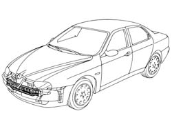
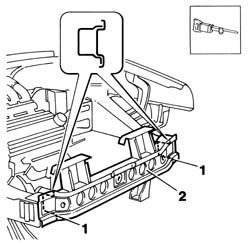
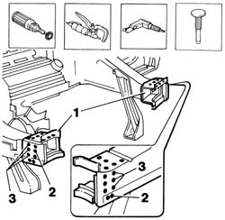
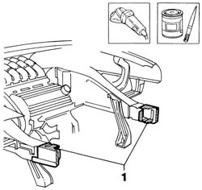
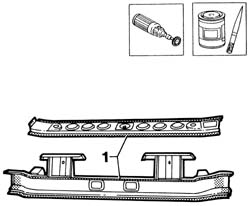
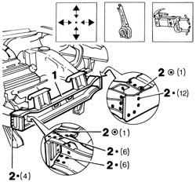
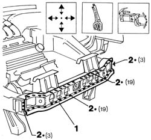
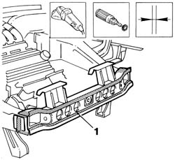
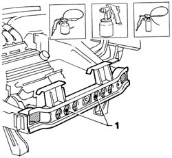

7210A16 R.R. WING LOWER CROSSMEMBER
- Path
- Procedures > 72 PANELS AND FRAME > 7210 REMOVING REFITTING > 7210A structural elements (front part) > 7210A16 R.R. WING LOWER CROSSMEMBER
- Kind
- repair procedure (removal / refitting; the operation number is the code)
- Applies to
- all engines; all production periods
- Interactive page
- https://sloeber94.github.io/elrnDB-a156/en/#/3239024
Applies to: all engines; all production periods
 Removing
Removing
 Refitting
Refitting7210A15 R.R. HEADLAMP HOUSING/FRONT WING CROSSMEMBER .
Check if any of the connected parts are deformed by checking body alignment dimensions. Use appropriate measurement tools (reference rigs, templates or gauges).
Straighten the body if necessary.

Applies to: all engines; all production periods
1. Use a pneumatic saw to cut along the lines shown in the figure.
Remove the front beam from its seat.

Applies to: all engines; all production periods
1. Use a rotary brush to clean the areas in order to expose the weld spots.
2. Use a chamfering machine to remove the spot welds.
3. Drill out the weld spots.
Remove the excess sheet steel using a hammer and chisel.

Applies to: all engines; all production periods
Use a grinding wheel to remove the spot weld residues.
1. Apply the electric weld paint finish.

Applies to: all engines; all production periods
Use a rotary brush to remove the corrosion-proofing from around the inner and outer edge of the part.
1. Apply the electric weld paint finish to edges in contact with the car.

Applies to: all engines; all production periods
Refitting
Removing1. Fit the part correctly using self-locking clips.
2. Use a spot welder to weld the areas shown in the figure.

Applies to: all engines; all production periods
1. Fit the part correctly using self-locking grippers.
2. Use a spot welder to weld the areas shown in the figure.

Applies to: all engines; all production periods
1. Use a grinding wheel to level weld residues and remove.
Use a rotary brush to clean the newly-welded areas.
Check that the welded parts are correctly positioned.

Applies to: all engines; all production periods
1. Spread rust-proofing inside the beam.
Apply paint.
Apply wax.

Applies to: all engines; all production periods